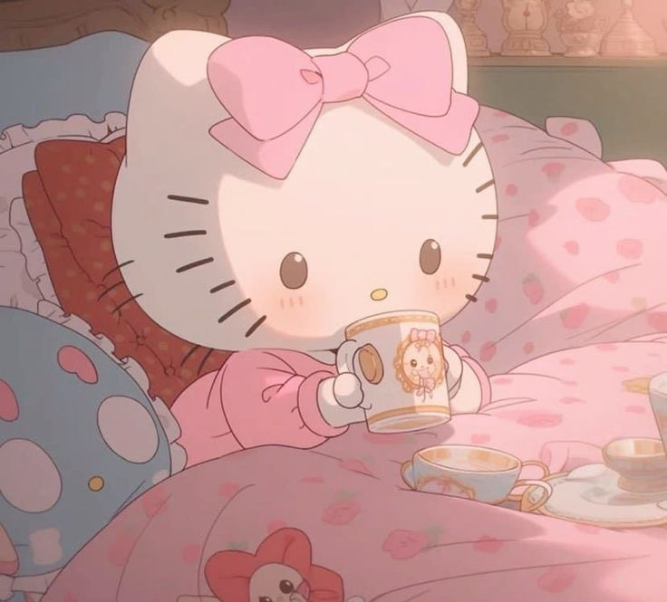

Thank you for visiting the site! Now I am going to tell more about the things I love
I have been interested in reading since I was 11. My book taste has changed several times: from young adult to classic literature. Now I especially like books or authors that can relate to me, my views, and so on.
Here are some book I would like you to read!
| Title | Description |
|---|---|
| The Metamorphosis | Metamorphosis tells the story of salesman Gregor Samsa, who wakes one morning to find himself inexplicably transformed into a huge insect. |
| The Bell Jar | The Bell Jar is the only novel written by the American writer and poet Sylvia Plath. Originally published under the pseudonym "Victoria Lucas" in 1963, the novel is supposedly semi-autobiographical with the names of places and people changed. |
| Heart of a Dog | Heart of a Dog is a novella by Russian author Mikhail Bulgakov. A biting satire of Bolshevism, it was written in 1925 at the height of the New Economic Policy, a period during which communism appeared to be relaxing in the Soviet Union. |
It's a new hobby for me because I prefer reading to watching, but I am watching "Gilmore Girls" currently and I really love it!
I love different types of podcasts: lifestyle, advice sessions, documentary, true crime, and so on.
Here are some of my recommendations: